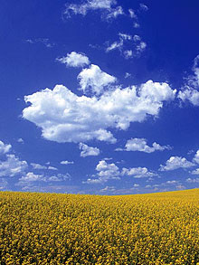

The Seven Wonders of Canada
The Canoe | The Igloo | Niagara Falls | Old Québec City | Pier 21, Halifax | Prairie Skies | The Rockies
Prairie Sky, Canadian Prairies
Vast, brooding, or uncannily blue, the "Big Sky" of the Canadian prairies has been nominated over and over again, in different ways, as one of the true wonders of Canada.